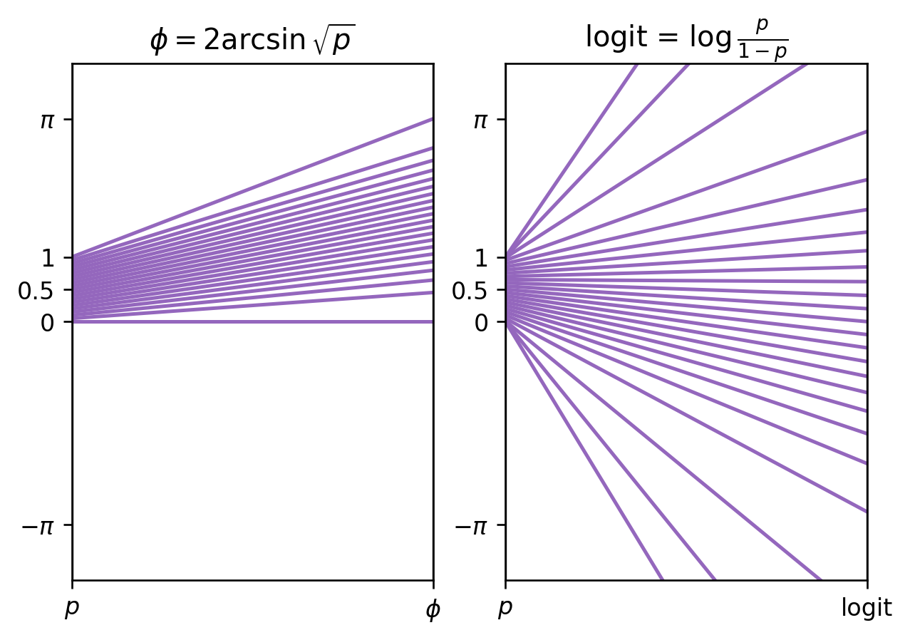
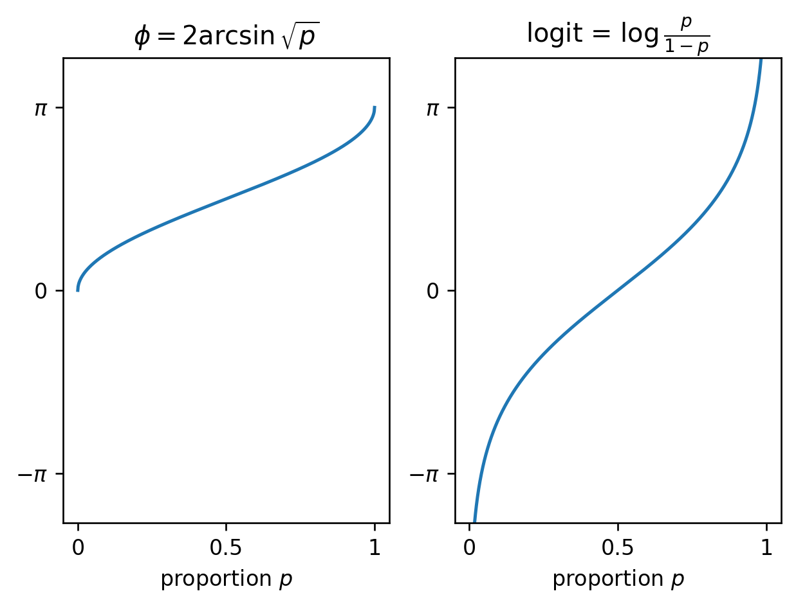

Parallel coordinate plots for visualizing functions
Sunday November 7, 2021
While thinking about the arcsin transform for Cohen's h, I described the function as “stretching” its inputs, and compared it to the logit function. I wondered whether a parallel coordinates plot could visualize the “stretching” more clearly than the traditional Cartesian plot. I think it kind of works!

This left-to-right function input-to-output view is pleasing in some ways. I think it succeeds in showing how the function is “stretching” the input, as desired. It's hard to show very many input/output pairs though, and it would be hard to show non-monotonic functions well, or show multiple functions on the same axes. For the logit, I think it's less clear in implying the function is unbounded than with the Cartesian version.

The usual way of plotting functions feels a little drier. “Stretching” is greater where the plot is more vertical; I feel this less immediately here than with the parallel coordinates version. Overall this is still a great way to visualize functions, of course. I wouldn't mind the occasional parallel coordinates plot as an alternative visualization though!
Code is on GitHub.